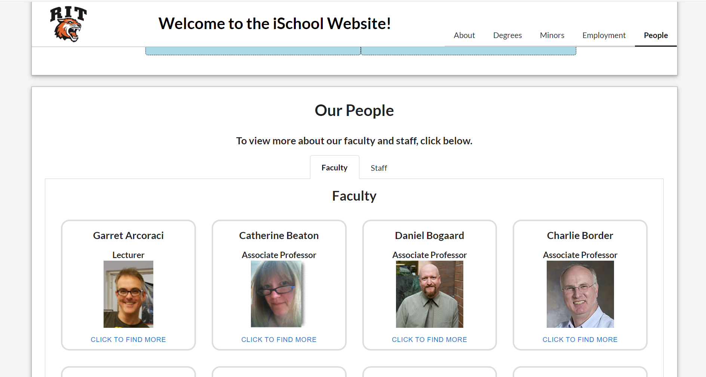

RIT iSchool Site Redesign
| Role | Collaboration | Duration |
|---|---|---|
| Fullstack Developer | Individual | August 23 - December 23 |
Scenario
Enhance the user experience on the iSchool website by incorporating UI components, be they downloaded React components or self-created ones. The project requirements include implementing functionality to retrieve specific areas, ranging from core information initially displayed to on-demand details such as About, Degrees, Minors, Employment, People, and Courses. Interactive components for each section will be designed or utilized to present information dynamically.
Utilizing the IST RIT API (available at http://www.ist.rit.edu/api/) was integral, and fetching data using the fetch() function, along with a proxy server for handling JSON from the web service, is essential. Elevating the site's aesthetics by incorporating professional graphics, styles, and engaging animations or interactions. To further extend the project, integrating at least three external UI React components that contribute to its functionality.
Solution
Upon completion, generate a production build and provide a working URL for evaluation. Additionally, creating a C# front-end that interfaces with the same RESTful service. For the C# front-end, emphasize the use of jQuery plugins to enhance the UI, requiring the incorporation of more than just jQueryUI—specifically, at least two additional plugins to diversify the user interface and provide a well-rounded experience.
